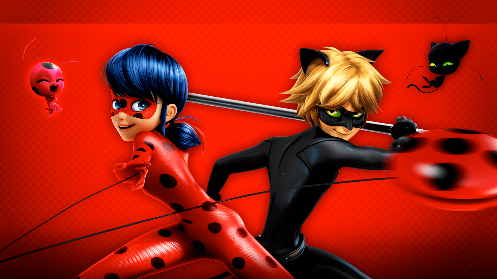

Aventura Grafica
Tematica
Miraculous Ladybug
La temática fue inspirada en la serie animada Miraculous: las aventuras de Ladybug en el capítulo de la temporada 1, episodio 24, titulado 'Volpina'. Es una serie francesa que sigue las aventuras de dos adolescentes, Marinette Dupain-Cheng y Adrien Agreste, quienes se transforman en los superhéroes Ladybug y Cat Noir para proteger París de los villanos. En este episodio en particular, se introduce al personaje de Lila Rossi, quien se convierte en la superhéroe Volpina, utilizando los poderes del kwami Zoe para manipular la ilusión y crear trampas engañosas. La historia muestra cómo la identidad de un héroe puede ser puesta en duda y cómo las relaciones entre los personajes se complican a medida que surgen nuevos conflictos.
Wiki del EpisodioIntegrates
- Adrover Yohana
- Maria Cadenas
Proceso
El proceso de creación de nuestra aventura gráfica comenzó con la búsqueda de una serie animada en común y la selección de un capítulo atractivo para inspirar la trama. Después de considerar varias opciones, decidimos centrarnos en Miraculous: las aventuras de Ladybug, una serie que combina acción, aventura y relaciones interpersonales, lo que la hace ideal para una experiencia interactiva. Elegimos el episodio 24 de la temporada 1, titulado 'Volpina', debido a su intrigante desarrollo de personajes y la introducción de un nuevo villano, Lila Rossi, quien se convierte en la heroína Volpina. Este capítulo destaca por su enfoque en el engaño y la manipulación de ilusiones, elementos que queríamos explorar en el juego. A través de este episodio, vimos una oportunidad para crear una narrativa emocionante y dinámica, llena de sorpresas, decisiones que afectan el curso de la historia y personajes con motivaciones complejas.
Juego
Diagrama